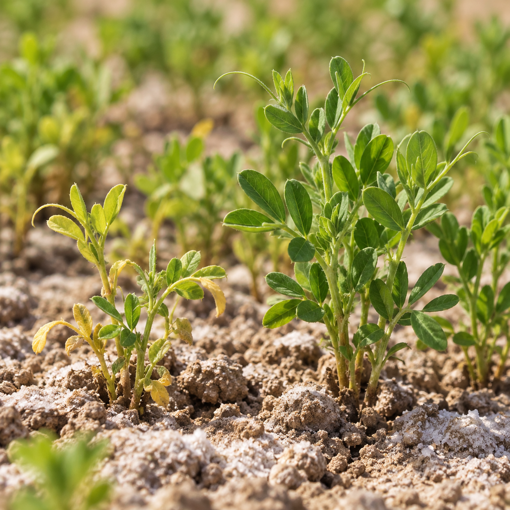

01 · Undergraduate thesis
Proline seed priming
& salt-stress tolerance.
Comparative responses of exogenously applied proline on germination and seedling physio-biochemical attributes of Lens culinaris under salt stress.
Soil salinity is among the most pressing constraints to lentil (Lens culinaris Medik.) productivity worldwide, and developing low-cost, scalable strategies to strengthen seedling establishment under saline conditions remains a research priority for climate-resilient agriculture. My undergraduate thesis investigated whether exogenous proline seed priming enhances germination performance and early seedling physiology in lentil under salt stress, and whether wild and cultivated genotypes differ in their capacity to benefit from this priming treatment. I am especially interested in how early seed-to-seedling responses foreshadow the physiological and biochemical mechanisms that ultimately determine stress tolerance later in plant development.
Lentil, proclaimed as “meat of the poor,” is an essential pulse crop, enriched with proteins, carbohydrates, fats, minerals, and vitamins, consumed by millions globally. However, its productivity is increasingly threatened by soil salinisation linked to irrigation practices and climate change. Seed priming offers a practical, field-deployable intervention that does not require genetic modification, making it especially relevant for smallholder farming systems. Understanding whether wild lentil relatives harbour stronger inherent priming responses could also inform future breeding strategies for salinity-resilient cultivars.
Research question & methods
Can exogenous proline seed priming improve salinity tolerance in lentil, and does this protective effect vary between wild and cultivated genotypes?
- Designed and conducted petri-dish and pot experiments using a randomized complete block design (RCBD) under controlled salt-stress conditions.
- Quantified germination performance through mean germination time (MGT), germination index (GI), and germination percentage (GP).
- Measured relative water content and chlorophyll a, b, carotenoids content to assess seedling physiological status.
- Quantified proline accumulation and antioxidant enzyme activities, including superoxide dismutase and peroxidase as biochemical markers of the salt stress response.
- Characterised root system architecture, including root length, surface area, volume, and diameter, using SmartRoot in ImageJ.
- Performed statistical analysis, including Analysis of Variance (ANOVA) and Tukey's HSD all-pairwise comparisons on experimental datasets using MS Excel and analytical software Statistix 8.1.
